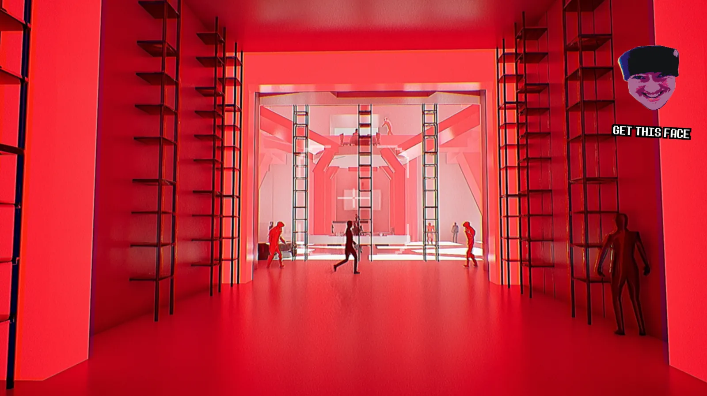
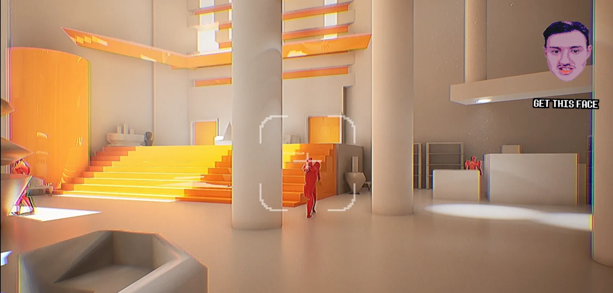
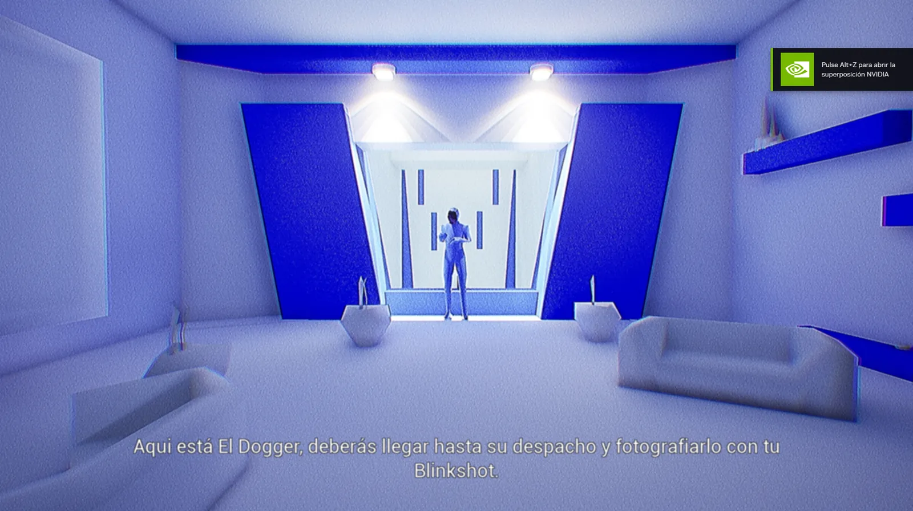

Personal projects · Global Game Jam · Jan 2025
You Are Nobody
A stealth game about infiltrating by stealing people's faces.



About the game
You will infiltrate their concrete castles and rip them of their identity. Steal civilian faces with your camera and don't get caught by the guards.
Because remember, you are nobody.
My contributions
I worked as Game Designer and Technical Designer. I designed and implemented, among others:
- Core mechanic: using a camera to steal people's faces and transform into other characters, and the whole stealth system built around it.
- AI: the enemies' and the NPCs' AI.
- Team support: helped the team with the development tools (Unreal Engine, GitHub and others).